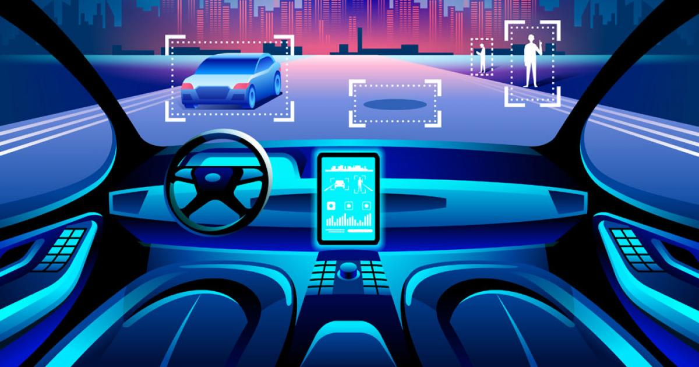

Cars rely on driving algorithms to get mapping from multiple sensors built into it to determine the path of the path, and the typical sensor "lidar" system, which is similar to radar, and stereoscopic vision system, geographic positioning system (GPS), and the recognition system Visual on things, and real-time positioning system. This is Google, one of the most prominent companies that are involved in automotive technologies, and they started working in this field since 2009 and spent a lot of money in it, the fruits of which were the launch of a new model for a self-driving car in May 2014 that does not include a steering wheel, a pedal or a brake, or fully autonomous . According to the accident reports issued by Google, its test cars were involved in 14 collisions, the error occurred in 13 of them among other drivers, while the first accident to be held responsible for the vehicle software occurred in 2016. In March 2017, Uber's self-driving car was involved in an accident in Tempe, Arizona, which caused it to overturn on either side.
